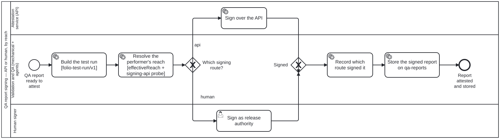

Generated from
cat-harness/processes/sdlc/qa-report-signing.bpmnbygen-processes-viz.ts— do not edit here. All processes
Process_QaReportSigning · strict · 6 step(s)
Attesting a QA report: build the test run, work out what the performer can actually reach, and sign — over the API where that is available, or as release authority where it is not.
You are in this process when a report needs to become evidence somebody else can rely on. The reach resolution before the gateway is the point: the route is CHOSEN from what the signer can do, not assumed, and the process records which route signed it so a reader of the attestation can tell.
A signature whose route is unrecorded is a signature whose weight cannot be judged later, which is why that step is drawn rather than left implicit.

| lane | role | what it does here |
|---|---|---|
| Validation and QA (mechanical + agents) | validation-pipeline |
Owns everything except the act of signing: it builds the hashable run, computes the two facts — effectiveReach and whether the API is configured — that Gateway_SigningRoute’s table reads rather than a hand-asserted choice, and after either route returns, records which one fired. The record is what lets a later reader know which trust assumption they are relying on without having to ask. |
| Attestation service (API) | attestation-service |
Reached only from the DMN table’s one row where both egress and a configured endpoint are true — everything else in Gateway_SigningRoute’s table routes around this lane entirely, so its presence in a trace is itself already the answer to whether egress existed. It carries exactly one task and no branch of its own, because the routing decision was already made before this lane was entered. |
| Human signer | publication-manager |
Deleting this lane’s role binding is not a documentation nicety: check:fallback-roles DERIVES the fallback role from whichever lane holds a task only a person can fill, so removing it turns that check red rather than merely undocumented. The gate that sends work here fires BEFORE any API attempt, never after one fails — an air-gapped host has no degraded mode to retry into, so this lane is a routing destination, not a retry path. |
Every one of the 6 step(s) is documented.
| step | lane | skill / sub-process | what it does |
|---|---|---|---|
Build the test run [folio-test-run/v1]Task_BuildRun |
Validation and QA (mechanical + agents) | qa-report-signingcontent-test |
Assemble the run record the signature will cover: the data hash and the process hash, each all-or-nothing. An UNKNOWN_HASH never reproduces another unknown, so a run that could not be hashed is signable only as what it is — unverifiable. |
Resolve the performer’s reach [effectiveReach + signing-api probe]Task_ResolveReach |
Validation and QA (mechanical + agents) | qa-report-signing |
Compute the two facts the gateway reads: effectiveReach(deployment, actor) from schemas/actor-reach.ts, and whether the signing-api capability is configured. Undeclared reach resolves to “unknown” rather than to the deployment’s value — an aggregate does not determine a member. |
Sign over the APITask_ApiSign |
Attestation service (API) | qa-report-signing |
The attestation service signs the run hashes. Reached only from the one table row that has both egress and a configured endpoint. |
Sign as release authorityTask_HumanSign |
Human signer | qa-report-signing |
A person attests the run hashes out of band. This is a userTask, not a serviceTask, and the distinction is enforced: fulfilmentKindsForBpmnType will not let a system actor fill it, which is what stops the air-gapped route quietly becoming another machine route. |
Record which route signed itTask_RecordAttestation |
Validation and QA (mechanical + agents) | qa-report-signing |
The attestation records the route, not only the signature. A reader who cannot tell an API signature from a human one cannot tell which trust assumption they are relying on. |
Store the signed report on qa-reportsTask_StoreSigned |
Validation and QA (mechanical + agents) | qa-reports |
The signed report, its signature and the route that produced it are written TOGETHER into the qa-reports entry keyed by the commit the report judged (main/<sha>/ or pr/<n>/<sha>/), through scripts/qa-store.ts — never committed to main and never pushed by hand (arc 3fva, owner ruling D1). A signature kept apart from the bytes it covers attests nothing a reader can check. A certification DECISION taken on the report is a separate node that stays on main beside test/attestations/ (ruling D5, default (a)); it is not written here. |
Every one of the 1 decision(s) is documented.
| decision | what decides it | branches |
|---|---|---|
Which signing route?Gateway_SigningRoute |
Answered by the performer’s resolved reach (effectiveReach plus the signing-api probe). api signs over the API; human has a release authority sign. |
api → Sign over the API human → Sign as release authority |